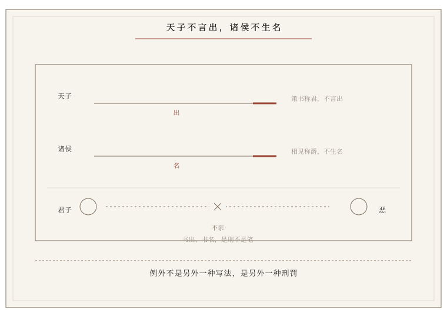

曲礼下 · 二·五十九 · 第 182 课
天子之策不言「出」，诸侯在世不书名；书「出」、书名，皆因大恶。诸侯失地名，灭同姓名。注「天子之言出，诸侯之生名，皆有大恶，君子所远，出、名以绝之」。
说什么事：史笔的两条禁令，与两个例外。
落在哪一层：礼，兼及礼意。论书法的分寸。
为何编在此位：上节论妃妾之号，此节转史策之辞。名号之事，由人称而及史称。
【经】天子不言「出」，諸侯不生名，君子不親惡。諸侯失地，名；滅同姓，名。
【注】天子之言出，諸侯之生名，皆有大惡，君子所遠，出、名以絕之。《春秋傳》曰「天王出居於鄭」、「衛侯朔入於衛」是也。絕之。
【疏】「天子不言出」者，天子以天下为家，策书不得言出，所在称君。「诸侯不生名」者，诸侯南面之尊，名者质贱之称，诸侯相见，祗可称爵，不可称名。「君子不亲恶」者，谓策书君子，谓孔子书经，若见天子大恶，书「出」以绝之；诸侯大恶，书名以绝之，君子不亲比恶人，故书「出」、名以罪之也。案僖二十四年「天王出居于郑」，《公羊》云：「王者无外，此其言出何？不能乎母也。」此郑注天子言出大恶，用《公羊》义也。案庄六年「卫侯朔入于卫」，朔未为君之时，与其母谗构世子伋，及为君，被逐出奔齐，王立公子黔牟，朔自齐而入卫以逐黔牟，《公羊》云「朔何以名？绝。曷为绝之？犯命也」，郑注以朔为大恶，亦用《公羊》义也。「诸侯失地，名」，庄十年「荆败蔡师于莘，以蔡侯献舞归」，《公羊》云「何以名？绝。曷为绝之？获也」；「灭同姓，名」，僖二十五年「卫侯毁灭邢」，《公羊》云「何以名？绝。曷为绝之？灭同姓也」。故郑总言「绝之」。
不言出 天子以天下为家，书「出」则示其失所。
不生名 注「名者质贱之称」，诸侯当称爵。
君子不亲恶 疏「君子不亲比恶人」，故书出、名以罪之。
失地 国土为人所夺。
灭同姓 灭同姓之国。
天子的策书不说「出」，诸侯在世不称名。君子不与恶相亲。诸侯失地则书名，灭同姓之国则书名。
此节讲的是「不说」的礼。天子出事，史官仍不说他「出」；一旦说「出」，就是判了他的罪。诸侯之名同理：平时不称名，称名即是绝之。礼在史笔上，把「例外」当作刑。
第一层 天下为家 疏「天子以天下为家，策书不得言出，所在称君」。此语最见天子之义：无外，故无出。
第二层 名之为贱 疏「名者质贱之称」。名是给卑者用的，称爵才见尊。故诸侯相见只称爵。
第三层 书以绝之 疏「君子不亲比恶人，故书出、名以罪之」。书法不是记录，是判决。一字的增损，即是绝交。
第四层 失地与灭同姓 两件都是大事：一失其土，一绝人之祀。故皆书名。礼以为此二者，比寻常之恶更重。
与今日何干 正式的文书里，多写一个字与少写一个字，往往就是定性。此理至今仍在公文与史书之间。
| 左 | 右 |
|---|---|
| 天子不言出 | 天下为家，无外故无出 |
| 诸侯不生名 | 名者质贱之称 |
| 君子不亲恶 | 书出、名以绝之 |
| 诸侯失地，名 | 失其土则绝之 |
| 灭同姓，名 | 绝人之祀则绝之 |
| 策书所在称君 | 书法即判决 |
画一枚竖立的简牍（三道横木以绳穿起），牍面空白。牍的右侧画一个被划去的小字位（一个方框加一道斜划，示「出」字被废）；牍的下方横排两枚小方牌，牌面各画一道短划（示书名之二例）。左侧画一条自左向右的横线，线中断一处（示「不言」之缺）。不写文字、不画人。赭色只用在被划去的那个方框上。
